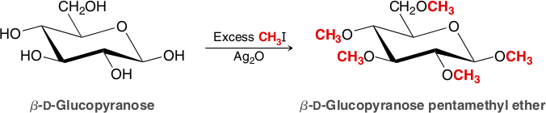
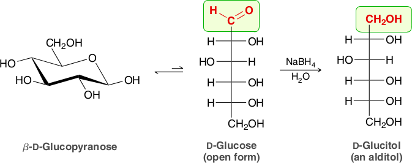
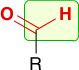
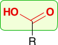
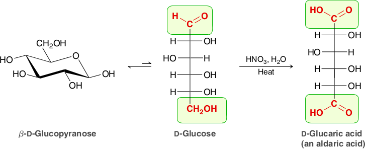
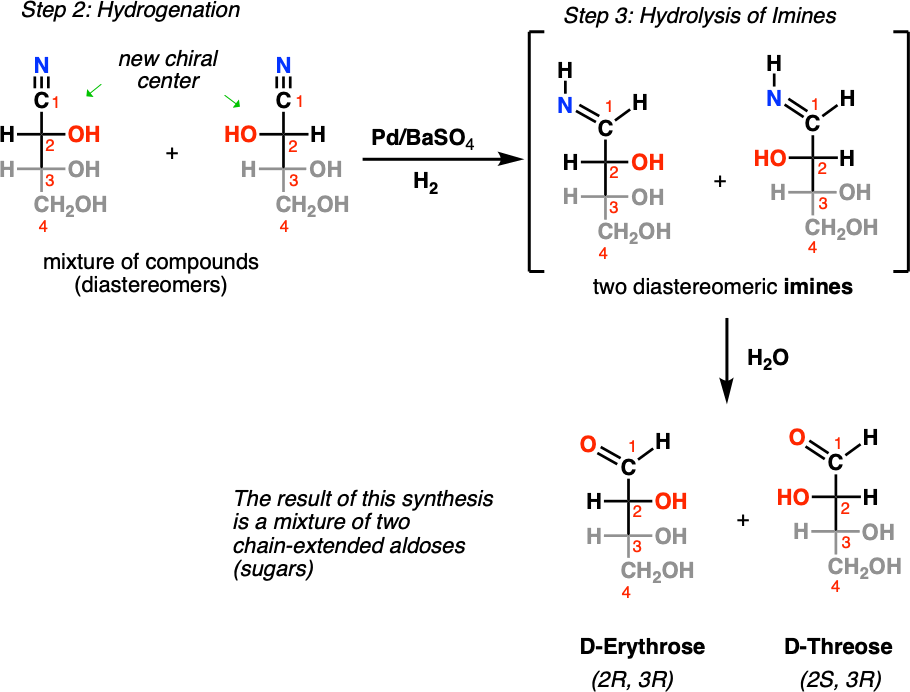
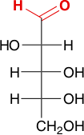
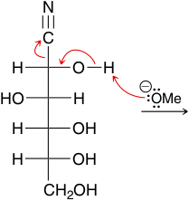

Reactions of Monosaccharides
Ester and Ether Formation
Monosaccharides are highly soluble in water (due to the presence of many hydroxyl groups) and are generally insoluble in most organic solvents. This property makes them difficult to purify by conventional methods. However, the ester derivatives of monosaccharides are soluble in most organic solvents and are easily purified. Monosaccharides are converted into their ester derivatives when treated with an excess of acid chloride or acid anhydride in the presence of a base, such as pyridine. Under these conditions, all five hydroxyl groups of β-D-glucopyranose are converted into ester groups

Monosaccharides can also be converted into their ether derivatives via the Williamson ether synthesis. As discussed in Section 13.5, this process generally involves treating an alcohol with a strong base to form an alkoxide ion followed by treatment with an alkyl halide (an SN2 process). When dealing with monosaccharides, a strong base cannot be used, for reasons that we will discuss later, and instead, a mild base such as silver oxide is used. Under these conditions, all five hydroxyl groups of β-D-glucopyranose are converted into ether groups.
Glycoside Formation
Recall that a hemiacetal will react with an alcohol in the presence of an acid catalyst to produce an acetal.

As mentioned in the previous section, monosaccharides exist primarily as cyclic hemiacetals; they are therefore converted into acetals when treated with an alcohol under acid-catalyzed conditions. The acetal products obtained are called glycosides.
Epimerization
When D-glucose is exposed to strongly basic conditions, it is converted into a mixture containing both D-glucose and d-mannose via the following process:

D-Glucose | NaOH, H2O ⇌ | NaOH, H2O ⇌ | D-Glucose | + | D-Mannose |
D-Glucose first undergoes base-catalyzed tautomerization to form an enediol. This intermediate can undergo tautomerization once again to revert back to the aldose, but in the process, the configuration at C2 is lost, leading to a mixture of D-glucose and d-mannose. D-Glucose and D-mannose are said to be epimers because they are diastereomers that differ from each other in the configuration of only one chiral center. When either pure d-glucose or pure D-mannose is treated with a strong base, epimerization occurs, giving a mixture containing both D-glucose and D-mannose. For this reason, chemists generally avoid exposing carbohydrates to strongly basic conditions.
Reduction of Monosaccharides
The carbonyl group of an aldose or ketose can be reduced upon treatment with sodium borohydride to yield a product called an alditol. Consider, for example, the reduction of D-glucose.
The starting monosaccharide exists primarily as a hemiacetal, which does not react with sodium borohydride because it lacks a carbonyl group. However, a small amount of the open-chain form is present at equilibrium, and it is that form that reacts with sodium borohydride to produce an alditol. As the open-chain form of glucose is converted into the alditol, the equilibrium is perturbed. According to Le Châtelier’s principle, this causes more of the glucose molecules to adopt an open-chain form, which then also undergo reduction. This process continues until nearly all of the glucose molecules have been reduced to D-glucitol. D-Glucitol is found in many fruits and berries. It is commonly referred to as D-sorbitol, or just sorbitol, and is often used as a sugar substitute in processed foods.
Oxidation of Monosaccharides
When treated with a suitable oxidizing agent, the aldehyde group of an aldose can be oxidized to yield a compound called an aldonic acid.
|  An Aldose | + Oxidizing agent | ⟶ |  An Aldonic Acid | + Reduced form of oxidizing agent |
This reaction is observed for a wide variety of oxidizing agents. When a high yield is desired, a useful oxidizing agent is an aqueous solution of bromine buffered to a pH of 6. For example:

The starting monosaccharide exists primarily as a hemiacetal, and the OH groups are not oxidized by this mild oxidizing agent. However, a small amount of the open-chain form is present at equilibrium, and it is the aldehyde group of the open-chain form that reacts with the oxidizing agent to produce an aldonic acid. As the open-chain form of glucose is converted into the aldonic acid, the equilibrium is perturbed. This causes more of the glucose molecules to adopt an open-chain form, which then undergo oxidation, a process that continues until nearly all of the glucose molecules have been oxidized.
The oxidizing agent above will oxidize aldoses but does not react with ketoses. A ketose lacks the aldehydic hydrogen that is characteristic of an aldose
It is true that ketoses slowly equilibrate with aldoses via a process that is similar to epimerization, and we might therefore expect that a small concentration of the ketose would be converted into an
aldose, which would then undergo oxidation, providing a pathway for the ketose to be oxidized as well. However, the mildly acidic conditions employed (a buffered solution of pH = 6) prevent isomerization from occurring. Under these conditions, a ketose does not undergo isomerization to give an aldose at an appreciable rate, and ketoses are therefore not oxidized by a buffered solution of aqueous
bromine. This, in fact, provides a method for distinguishing between aldoses and ketoses. In contrast, there are other oxidizing agents that employ conditions under which isomerization can occur. These alternative reagents can oxidize ketoses as well as aldoses. Examples of such oxidizing agents include the Tollens’ reagent (Ag+ in aqueous ammonia), Fehling’s reagent (Cu2+ in aqueous sodium tartrate), and Benedict’s reagent (Cu2+ in aqueous sodium citrate). All three can be used as chemical tests for the presence of an aldose or ketose.
The Tollens’ reagent indicates the presence of an aldose or ketose when the surface of the reaction flask is coated with metallic silver (looking like a mirror), while the other two tests indicate the presence of an aldose or ketose with the formation of a reddish precipitate (Cu2O). These three reactions are used only as tests to obtain structural information about unknown carbohydrates but are not efficient as preparative methods when sufficient quantities of the aldonic acid are desired. A carbohydrate that tests positively for any of these three tests is said to be a reducing sugar because the carbohydrate can reduce the oxidizing agent. These chemical tests are useful for distinguishing between aldoses or ketoses and their glycosides. While aldoses and ketoses are reducing sugars, their corresponding glycosides are not. Glycosides do not exhibit ring-opening reactions under neutral or basic conditions and therefore do not produce even small quantities of an open-chain form containing an aldehyde group. As such they are not oxidized by any of the oxidizing agents discussed.
In the presence of a stronger oxidizing agent, such as HNO3, the primary hydroxyl group is also oxidized, giving a dicarboxylic acid, called an aldaric acid. This reaction involves the oxidation of both of the highlighted functional groups.
Chain Lengthening: The Kiliani–Fischer Synthesis
Much early activity in carbohydrate chemistry was devoted to unraveling the stereochemical relationships among monosaccharides. One of the most important methods used was the Kiliani–Fischer synthesis, which results in the length ening of an aldose chain by one carbon atom. The C1 aldehyde group of the starting sugar becomes C2 of the chain-lengthened sugar, and a new C1 carbon is added. For example, an aldopentose is converted by the Kiliani–Fischer synthesis into two aldohexoses.
Discovery of the chain-lengthening sequence was initiated by the observa tion of Heinrich Kiliani in 1886 that aldoses react with HCN to form cyano hydrins. Emil Fischer immediately realized the importance of Kiliani’s discovery and devised a method for converting the cyanohydrin nitrile group into an aldehyde.
Fischer’s original method for conversion of the nitrile into an aldehyde involved hydrolysis to a carboxylic acid, ring closure to a cyclic ester (lactone), and subsequent reduction. A modern improvement is to reduce the nitrile over a palladium catalyst, yielding an imine intermediate that is hydrolyzed to an aldehyde. Note that the cyanohydrin is formed as a mixture of stereoisomers at the new chirality center, so two new aldoses, differing only in their stereochemistry at C2, result from Kiliani–Fischer synthesis. Chain extension of D-arabinose, for example, yields a mixture of D-glucose and D-mannose.
Using a poisoned catalyst (Pd/BaSO4) in the presence of hydrogen gas (H2) will reduce the nitrile to an imine. In the presence of water, the imine will then be rapidly hydrolyzed to an aldehyde.
The result is an extension of a sugar by one carbon (as a mixture). For example, application of this procedure to D-glyceraldehyde results in the two diastereomers D-erythrose (2R, 3R) and D-threose (2S, 3R). (Since these two diastereomers only differ in the configuration at a single carbon, they are often called “epimers”.)
As an example of this process, consider the outcome achieved when the modern version of the Kiliani–Fischer synthesis is performed with d-arabinose as the starting material:
|  D-Arabinose | 1) HCN ⟶ 2) H2, Pd / BaSO4, H2O | D-Glucose | + | D-Mannose |
Chain Shortening: The Wohl Degradation
The Wohl degradation is the reverse of the Kiliani–Fischer synthesis and involves the removal of a carbon atom from an aldose. The aldehyde group is first converted to a cyanohydrin, followed by loss of HCN in the presence of a base.
Overall, the net result is the ability to shorten a carbohydrate chain by one carbon atom. Conversion of the aldehyde into a cyano group is accomplished via oxime formation (as seen in Section 19.6) fol lowed by dehydration. The resulting cyanohydrin then loses HCN when treated with a strong base to afford the new carbohydrate that has one less carbon atom than the starting carbohydrate:
D-Glucose | NH2OH ⟶ | An oxime | Ac2O ⟶ |  A cyanohydrin | D-Arabinose |
This chain reduction process generates only one product, in contrast with chain lengthening (Kiliani–Fischer), which gives two products. The yields of the Wohl degradation are generally not very high, but this process and others like it were incredibly useful during early investigations aimed at elucidating the structures of monosaccharides.